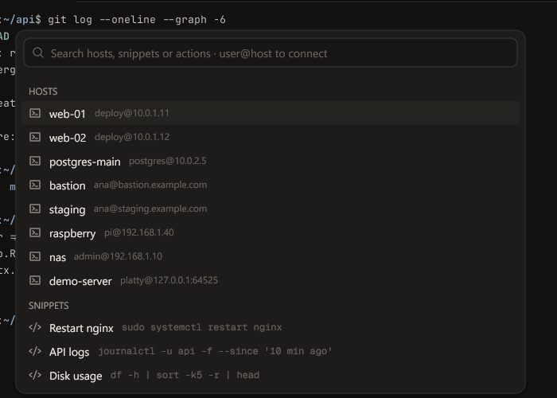
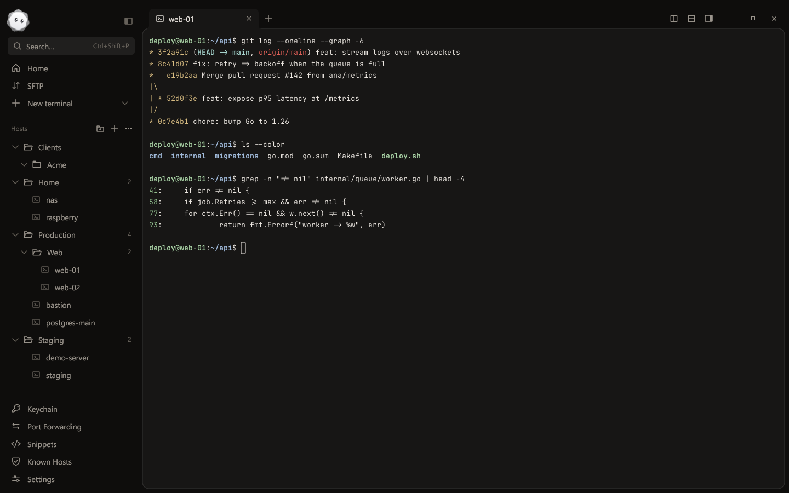
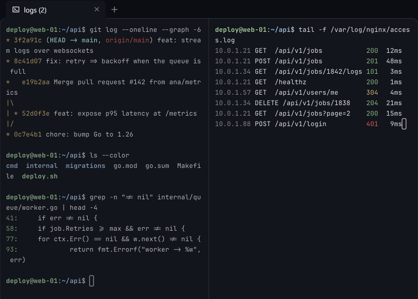
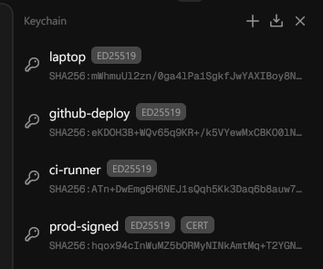
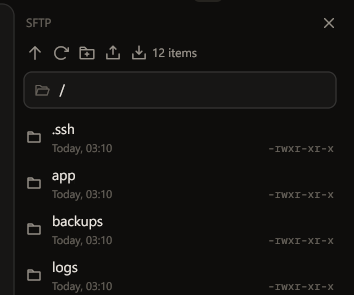
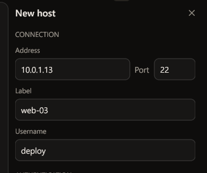

Search Everywhere
Press Ctrl+Shift+P to jump to any host, snippet or action, or type user@host and connect right away.

Platty is an SSH client and terminal for Windows, written in Go and drawn on the GPU. Hosts, keys, tunnels, SFTP and snippets live together, encrypted on your PC.

What's inside
No Electron and no web view. Platty starts fast, stays light on memory and feels like a Windows app, because it is one.
Press Ctrl+Shift+P to jump to any host, snippet or action, or type user@host and connect right away.

They come back when you reopen Platty. Rename, reorder, duplicate, or type into every pane of a tab at once.

Generate ed25519 keys, import yours, attach SSH certificates. Passphrases stay in memory unless you ask Platty to remember them.

A transfer queue with progress, whole folders, drag and drop both ways, and remote files you edit in your own editor.

Folders, tags, jump hosts and a command to run on connect. Bring everything over from ~/.ssh/config.

Truecolor, scrollback search, reflow on resize and a glyph cache that redraws a full 1080p screen in under 6 ms.
JetBrains Mono, Fira Code and Geist Mono with ligatures, color emoji and system font fallback.
Local, remote and SOCKS5 tunnels, each behind a switch, with their own connection.
CPU, memory, disk, network, load and uptime at the bottom of every SSH session.
XChaCha20-Poly1305, unlocked by Windows, by a master password, or both. Locks when you step away.
Encrypted .platty backups where secrets stay out unless you add them, plus plain SSH config export.
Open source
The parts that make Platty work are small Go libraries you can use in your own projects.
github.com/plattyssh/vt
A VT terminal emulator with no GUI: parser, screen state, reflow and input encoding.
github.com/plattyssh/conpty
Start processes in a Windows pseudo console, with resize and clean shutdown.
github.com/plattyssh/glyphs
A cached glyph rasterizer with COLR color emoji, font fallback and ligature shaping.
Questions
Yes. Platty is open source under the MIT license, with no account and no telemetry.
On your PC only, in %AppData%\Platty. Hosts, keys and passwords are sealed with XChaCha20-Poly1305; the key is protected by your Windows user, by an optional master password, or both.
Beta builds aren't code-signed yet, so SmartScreen may ask you to confirm. Signed releases are on the way.
Yes, through the Windows OpenSSH agent: add the key with ssh-add and pick the Agent sign-in method for the host.
A short introduction sets up your theme, terminal and vault the first time you open Platty.
Download for Windows